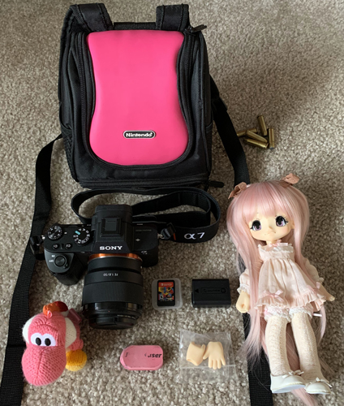

welcome to my gear thread

I leave the exif data on most photos if you're curious about what I used.
Current:
- Sony a7 II
- I like this camera. It's nice. The body is small and lightweight (relatively).
- Sony FE 50mm f/1.8
- This lens makes me sad because it has no manual controls. It will be useless someday.
- Canon FDn 50mm f/1.4
- I am definitely abusing f/1.4. I am not sorry yet. Probably from June 1980. There's some grease on the aperture blades that worries me.
- iPhone XS
- It's okay I guess. HEIC is the bane of my existence. Portrait mode can make some funny AI choices as well.
Past:
- Samsung Galaxy Note 3
- At some point the motor stopped focusing and dust moved inside the lens. These photos were very iconic.
- Google Nexus 5
- I have good memories of this phone!!
- Canon Powershot SD13000 IS
- I used this one until my phone produced better quality images. It was a black friday deal.
- Kodak Easyshare C613
- My uncle bought this one for me after my fuji died. It was pink.
- Fujifilm FinePix A400
- My first xD card gave out early and the lens stopped retracting. I loved the photos it took, but you couldn't tell if they were blurry from the tiny screen.
- Digital Blue
- My first camera. I sure hope I saved the software disc... The UI is miserable to get photos off this thing.